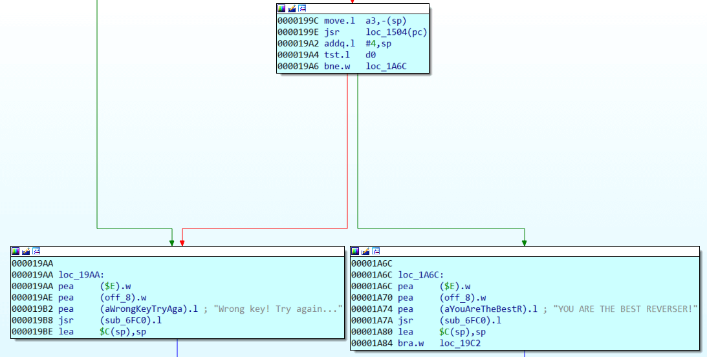
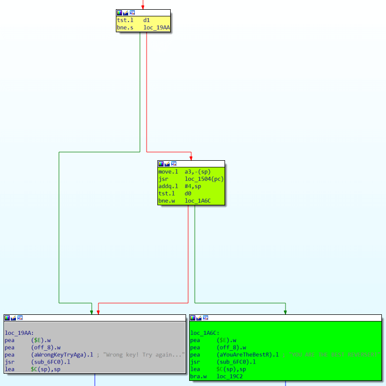
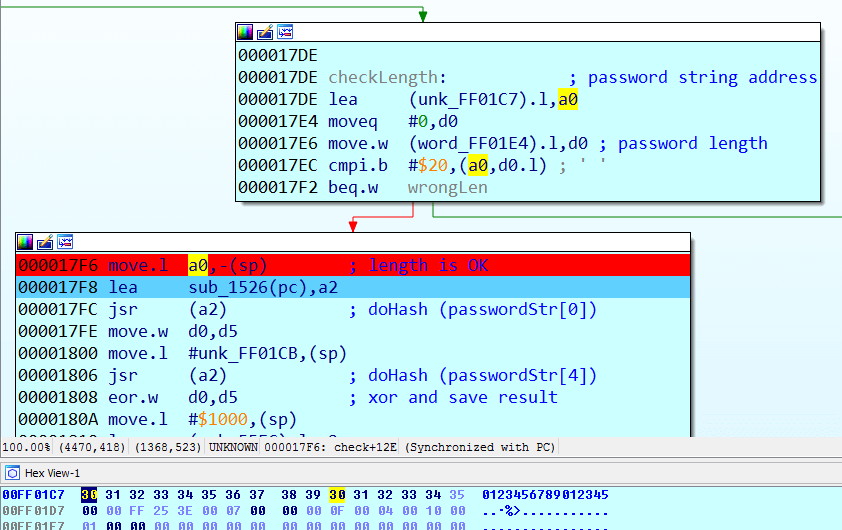

PHDays "Best Reverser" contest (SEGA Genesis/MD ROM) write-up
Being engaged mainly in romhacking and console games fan translation, I try sometimes to solve also CTFs. And I’m glad that recently people began to write console platforms crackmes.
For example, Sega Genesis crackme from zznop. It’s not so hard and with the right tools in hand it can be solved quickly. You can also find fine write-up on this.
“Best Reverser” online contest was held on from 1st till 14th of may 2019 (in Russian). In a nutshell, Sega Megadrive ROM (mirror) was given and in order to confirm challenge completion, it was necessary to find the right password for your e-mail.
Below was a link to Sega Genesis emulator - Fusion and that’s all. I can imagine, how difficult it was for casual reverse engineers to analyze KeygenMe only with Fusion. Of course, we will use IDA. (On the GHIDRA application here I will say a few words when we get to the code itself). A short googling “IDA Sega” immediately leads us to the utility SMD IDA Tools. This includes loader and debugger (based on Gens Re-Recording ) for the usual familiar workflow in IDA.
As usual, load ROM in IDA and you can immediately start the debugger to look at the keygenme itself:
Maximum 28 characters are given for name (or e-mail), 16 characters are given for password. If the password is shorter, it is not accepted with a length error message. If the password is wrong, Wrong key message is displayed. Let’s immediately look at the list of strings that IDA has found.
In ROM header’s ModemCode the author has left his nickname. After googling, we find out, that he is involved in the Sega Genesis reversing and (what a coincidence) wrote SMD IDA Tools which we now use.
Usually in CTFs, developer data is a small hint that can help us in further analysis. Look, what other lines the IDA has found in ROM:
Lucky for us, strings are not encrypted and encoded in plain ASCII, so lay down your hex editor with relative search (if you are familiar with conventional Sega romhacking). Let’s go to the found address of a success message. If you pause the debugger after receiving the wrong key message, the IDA will show that the message is referenced by the command at 0x19B2.
 The check itself is inside a monstrous function that (as the IDA suggests) extends from 0x16C8 to 0x23E6
Mother of God! How can this be analyzed?
Take it easy, let’s start small. First, let’s check if the code is obfuscated. Fast reading shows that it does not do anything absolutely meaningless, and therefore, most likely, this function was generated by the Sega C compiler and many small functions were inlined into the main one. Also, judging by the size, this code does something other than just verifying the password. For example, it can decrypt data with a complex algorithm, which the author just has taken from existing library.
GHIDRA has a decompiler for 68000, which could help us here. And Dr. Mefisto, luckily for us, also has written a loader for Sega ROMs.
After decompiling this function, it becomes a little more understandable, though not smaller. But the decompiler generates thousands of variables that soon become impossible to track through listing. In addition, GHIDRA does not have a debugger, so in any case, the main data we will have to get from debugging the code in IDA. Even though it doesn’t have a decompiler for our processor. Let’s then check the code in the reverse direction. We, of course, are interested in the branch, which will print out “YOU ARE THE BEST REVERSER!”.
 First, right before displaying the successful message, loc_1504 function should not return zero. This is the usual kind of construction:
if (loc_1504(a3))
printf ("success");
else
printf ("fail");We’ll leave the function loc_1504 to analyze later and see what is needed to get to our first test.
1. Test #2
d1 must be zero. Highlighting for the convenience d1 and briefly examining the branches from the top of this second check, we see that several values can be written in d1 and 0 can be written in one of the branches as a signal of successful completion. All this is very similar to returning zero on success according to the C standard, and any other value will correspond to a certain error that occurred during the execution of the program. Typically, C code uses constants in the form of macro to improve readability, for example:
if (file_size == 0)
return INPUT_ERROR;
do_stuff();
return 0From the previous screenshot you can see that for success (branching to loc_20EA) you need two words: $24(a6) and $22(a6) to be equal. This unusual addressing is similar to how the C compiler handles structures. In a6, you put a pointer to the beginning of the structure. $24(a6) and $22(a6) are two adjacent C elements of the structure that are of type Word. Putting breakpoint on this comparison and entering different names and passwords, you will notice that $22(a6) is always equal 0xCB4C, but in $24(a6) word very much depends on what characters we have entered in the password and does not depend on the name entered. It looks like comparing some kind of checksums of the password with a predetermined 0xCB4C. How is that checksum is calculated? Let’s put a write breakpoint on the structure element $24(a6) – at 0xFF1D6C And we see that it continuously overwritten in function sub_E3E:
It looks like $24(a6) is indeed some kind of checksum. Translated into C, this code may look like this:
checksum = static_table[(checksum ^ b) & 0xFF] ^ (checksum >> 8);where b is the byte that is passed to sub_E3E as an argument and static_table is the word table that is stored directly in the ROM at 0x11FC0. It looks like this:
Still keeping in mind that we are analyzing, probably, a library decryption or hashing function, we google these values:
 The first results show that we are dealing with the CRC16 calculating function. This is good and will greatly speed up our analysis, but still it adds little clarity to the code around. The CRC16 calculating code is so small that it will fit in the single sub_e3e function. It turns out that our huge sub_16c8 validation function only uses CRC16 in its logic, but what it does is still unclear without potential hours of debugging and analysis. Remember how I used to say that sometimes it’s good to know who wrote that crackme? Let’s use this information now. We’ll search for our CRC16 table in all lab313 repositories (where we downloaded SMD IDA Tools)
The first results show that we are dealing with the CRC16 calculating function. This is good and will greatly speed up our analysis, but still it adds little clarity to the code around. The CRC16 calculating code is so small that it will fit in the single sub_e3e function. It turns out that our huge sub_16c8 validation function only uses CRC16 in its logic, but what it does is still unclear without potential hours of debugging and analysis. Remember how I used to say that sometimes it’s good to know who wrote that crackme? Let’s use this information now. We’ll search for our CRC16 table in all lab313 repositories (where we downloaded SMD IDA Tools)
Bingo! One of Dr Mefisto’s projects also uses CRC16 calculation. This is the compressor and decompressor code for RNC ProPack.
After reading carefully about RNC ProPack here, we learn that this is some compression library that has been used on many platforms, including some Sega Genesis games. From the description of the archive format we find the signature:
3 bytes signature "RNC"
1 byte version
4 bytes unpacked data length
4 bytes packed data length
2 bytes CRC-16 of packed data
2 bytes CRC-16 of unpacked data
2 bytes overlap size (used for inplace unpacking)And such a signature can be found in our ROM four times. But the first three times these bytes occur as operands in the signature verification code, and the fourth occurrence (offset 0x12FA4) looks totally like RNC Pack:
Note that we have also found our desired checksum, which we met during the analysis: 0xCB4C. This is a checksum of unpacked data. It turns out, our crackme unpacks the archive and checks data checksum. And every time we tried, unpacked checksum was wrong. At the same time the CRC16 of packed data is OK. The code checks it too: you can verify this by placing read breakpoint on 0x12FB2 (in archive). Let’s see how this archive will be unpacked with RNC ProPack compression tool from Dr. Mefisto, which we have found in his github repository earlier. As the README is very small, let’s just read the help of exe file itself:
From the list of commands, we learn that the tool can search for packages in binary files. And using the ‘s’ key we find the package at the already familiar offset 0x12FA4, but the tool warns us that decryption key is necessary for unpacking. Do not pay attention to the last line – this is a bug of the tool.
Now everything becomes clearer: there is some key, which is used when decrypting the archive. And if CRC16 of the resulting archive is equal to 0xCB4C, then the key was correct and the archive was unpacked properly. Earlier we noticed that the resulting checksum very much depended on what password was entered. So most likely, our decryption key somehow formed from the entered password. We will return to this later, first thing for now is to find the decryption key of our archive and see what is packed inside. First, from the compression tool source file ‘main.c’ we learn that decryption key is a 16 bit word.
That is, there are only 65536 possible keys exist, we can just bruteforce all of them.
There are even several ways to do this: write a script in IDA to run on the desired branch of the code with the check of the resulting checksum. Modify the compression tool code so that the decompression function returns the key that came up. But the simplest thing is to run the compression tool program with each of the possible options of the key and check the result with some script. There is a small caveat: compression tool takes as a key argument not integer number, but hexadecimal string:
So for the brute force approach this Python script will be OK:
from datetime import datetime
import subprocess
startTime = datetime.now()
for key in range(0xFFFF):
if subprocess.call("rnc_test.exe u best_reverser_phd9_rom_v4.bin out.bin -i=12FA4 -k=" +
hex(key),stdout=subprocess.DEVNULL) == 0:
print ("DECRYPTION KEY FOUND: 0x" + hex(key))
print (datetime.now() - startTime)
quit()
print ("DECRYPTION KEY NOT FOUND") So, after 4-5 minutes the desired key is found: 0xFEDC. Let’s now use the ‘u’ command to properly unpack our archive from the ROM. But at first glance there are no strings or graphics inside. Just a small piece of binary data, with word 0x4E71 repeating at the end. That’s a familiar word for those who have dealt with the M68000: the NOP instruction. Looks like it’s just a code.
So, after 4-5 minutes the desired key is found: 0xFEDC. Let’s now use the ‘u’ command to properly unpack our archive from the ROM. But at first glance there are no strings or graphics inside. Just a small piece of binary data, with word 0x4E71 repeating at the end. That’s a familiar word for those who have dealt with the M68000: the NOP instruction. Looks like it’s just a code.
Now let’s see how does crackme form this key from our password. If we go back to the last sub_e3e function we considered, we have found that $24(a6) is a checksum, and the code of this function should have a fragment similar to this:
checksum = static_table[(checksum ^ b) & 0xFF] ^ (checksum >> 8);From main.c we find out that static_table is named ‘crc_table’ in code. And a little searching in main.c code, similar to our assembler code piece, we find out that sub_E3E is a function of writing the decrypted byte to the output stream, that also counts the checksum in parallel:
This function has unpacked byte as an argument and since it is all the time different depending on the password we entered, obviously, the byte was already decrypted with the key.
Let’s see how byte b is passed to the called function. Get to the end of sub_E3E and return. Visually comparing assembly code with our main.c source, we find out that the function was called in the unpack_data_m1 procedure
In compiled form this piece of code looks like this:
Decryption key word is not passed directly into write_decoded_byte, only a low byte from decryption key word (it was pre-pushed into the stack), but in the function ror_w full word is passed from the structure into RAM. Address of v->enc_key, as seen from the IDA debugger, is 0xFF0D46. And the value for our password 0123456789012345 is equal to 0x4444.
Then just put breakpoint on write in 0xFF0D46 and re-try to accept the entered password. Breakpoint stops on 0x1c56, in d5 already 0x4444, and looking a little higher, we see that d5 is formed in 0x1808 and before that also in 0x17FE:
What happens to d5: in 0x17FC the function sub_1526 is called. Before that address from a0 is pushed into stack (IDA Debugger shows address 0xFF01C7), then the same function is called, but it this time 0xFF01CB is passed to it, both results are XORed and this turns out to be the decryption key.
 These addresses are actually the beginning of the string of the entered password in RAM and the address of the fifth character of the same password. What does sub_1526 do?
It takes the character of the string passed to it, and tries to hexify it. If the symbol is not in the range of ‘0’-‘F’, then 0x57 is subtracted from character’s code and saved as byte. And so goes for all the four characters of the given string. Then each of the resulting 4 bytes are converted to 4 bit nybbles and together they form a 16 bit hash. Sounds complicated, but in practice sub_1526 (“12EF”)=0x12EF. Thus, four characters of the password can get any possible hash word. A small caveat remains, however. What hash will be generated from the string “99P@”? ‘P’ code is 0x50, and result byte 0x50-0x57 = 0xF9, ‘@’ code is 0x40, and result byte 0x40-0x57=0xE9, and since the high nybble in the byte is not used in the final hash, then sub_1526 (“99P@”) = 0x9999. With such scheme, we can replace the numbers with one, or (for some nibbles) with two different characters without changing the resulting hash.
So, we get a hash from the first and second four characters of the password, xor them and save the resulting word as a decryption key. The easiest option for us is simply to set the first 4 characters of the password with needed key: “FEDC”. And the second 4 characters leave as “0000”. Now, finally, during test #2, d1 is set to 0 and the code goes further!
2. Test #1
So, returning to our last test on the path to success message, we see that the function loc_1504 need to return non-zero result. From a3 address is pushed to function arguments (0xFF0D46). And, if you look closely, this address contains the unpacked code from our RNC archive, which we were able to extract earlier with the help of compression tool.
Then code saves all registers, loads the necessary variables from the ROM into the registers and jumps into the unpacked code in RAM:
The unpacked code itself makes a relatively simple checksum test:
1. First it counts the sum of the character codes in the name string, xor it with the hash of the third four characters of the password. The algorithm to obtain the hash we have already analyzed in sub_1526.
2. Then it takes the length of the name, translates it to high byte and xor it with the hash of the fourth four characters of the password.
As a result, if the password is correct, these two values must be equal.
The last commands set d0 to 1 and store the result in the RAM variable. After that, the code exits the RAM section, restores d0 and proceeds to the successful message print if it is not zero.
The rest is easy: third 4-chars can be 0000 to generate zero passHash8-12. Real key generation here will be only in last 4-digits of password:
passHash12_16 = ((nameLen -1) << 8) ^ nameCharsSumIn General, knowing this, now you can calculate the password for your email manually or using excel. But in romhacking scene it’s common to write password generators for games as small javascript’s form. So below is a simple form in which you can generate a password for your name or email.
Javascript also allows you to save the generator as a separate working three-kilobyte html page, which you can check for the commented source.
Check out this randomize checkbox. It is clear that we have considered the most basic variant with zeros on the place of the second and third 4-characters and the characters themselves in range ‘0’-‘F’.
In principle, the second four can be any word, first 4-chars now can be built like this:
fstHash = randomSndHash ^ 0xFEDC;The similar thing is about third four-symbols. It can be random word, but last four chars should be built now like this:
nameHash = ((((name.length - 1) & 0xFF) << 8) ^ sumStringCodes(name)) ^ randomThrdHash;Also each of the chars in password can be replaced with 1 or 2 other chars (from defined dictionary) without affecting any checksums, as I’ve described earlier. So this also can randomize password even further.
You can check all this randomizers implementation section inside password generator’s page code.
TL;DR
Keygenme’s author has written a simple hashing scheme for email string, compressed this piece of code with RNCProPack compressor and encrypted with key 0xFEDC. Then he has embedded this archive in ROM along with decompression compiled code. ROM generally checked if encryption key (provided in first half of password) was right. And if so, jumped to decompressed code and compared email string hash with hash, provided in second half of password.
We have found specific constants table inside ROM, using which we managed to find actual decomressor’s source and executable in author’s github repositories. Then we have bruteforced decryption key and reverse engineered last hashing scheme.